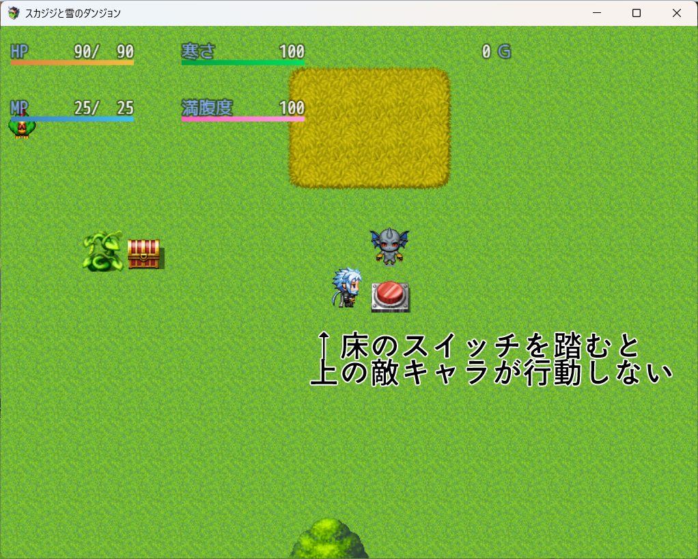
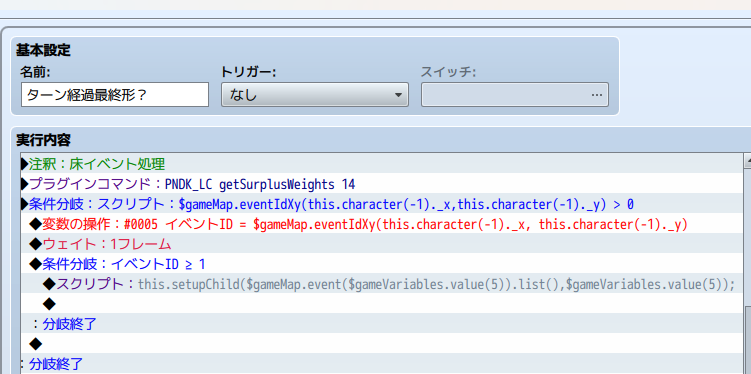
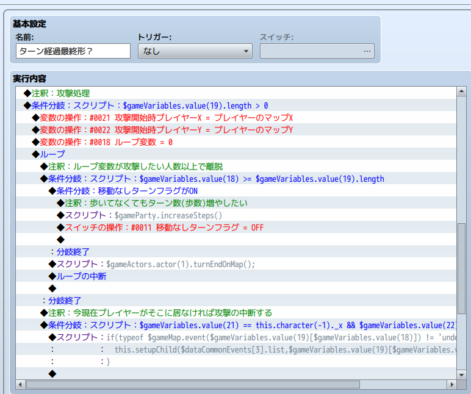
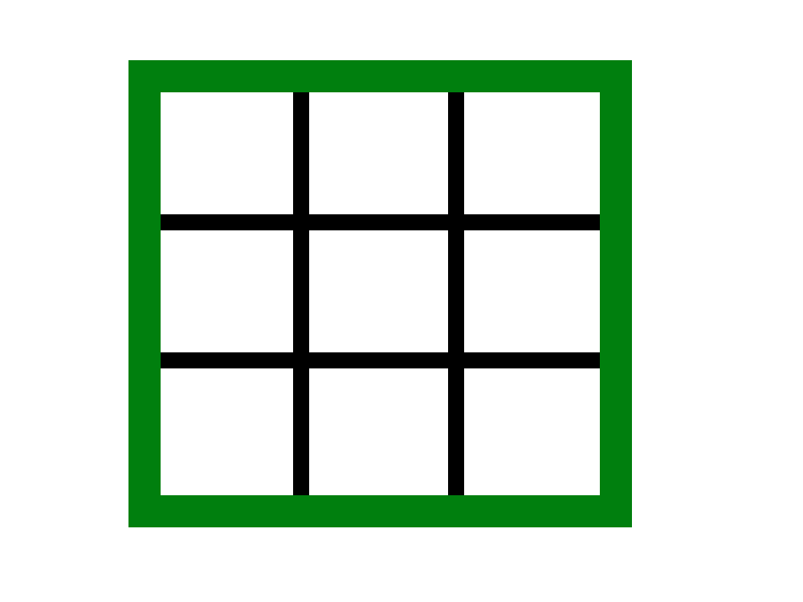
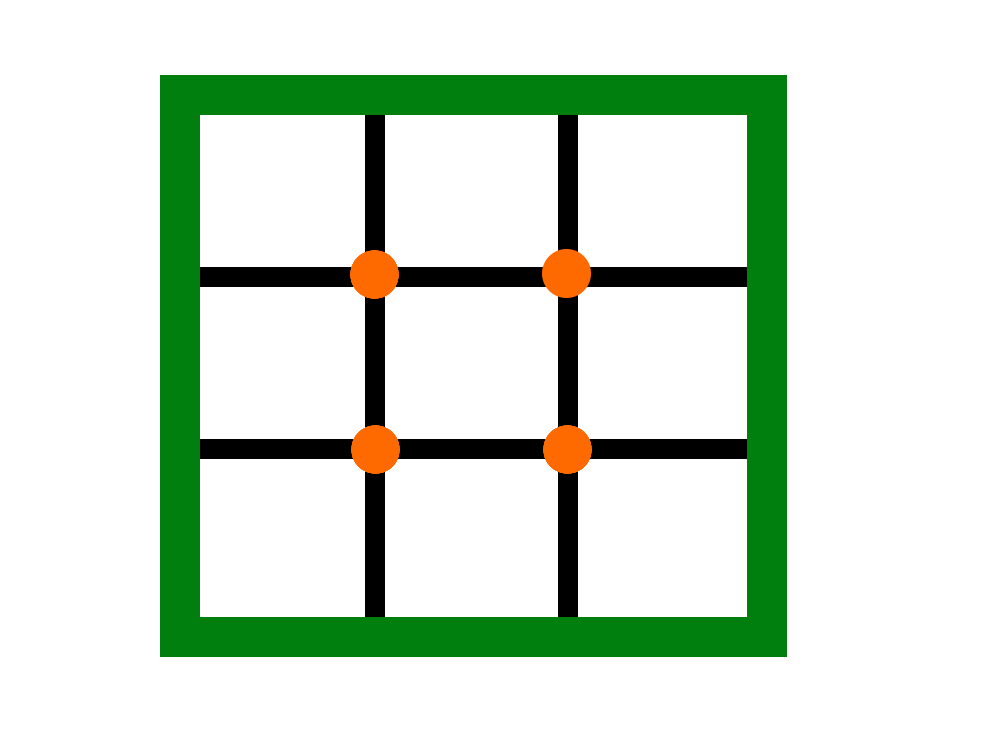

はじめに
RPGツクールで「風来のシレン」のような「不思議のダンジョン」系のゲームを作りたかった頃の話。
ここでは、限りなく近づけるために試行錯誤したことやなぜ開発を中断してしまったかについてをまとめる。
もしこれを読んだあなたが、私と同じく「不思議のダンジョン」ライクゲームを作りたいと思うなら、参考にしてほしい。
願わくば、「究極の不思議のダンジョン」をRPGツクールでも作れることを証明してくれることを……。
This is the story of when I wanted to create a “Mystery Dungeon”-style game like “Shiren the Wanderer” using RPG Maker.
Here, I'll summarize the trial and error I went through to get as close as possible, and why I ended up halting development.
If you're reading this and also want to make a “Mystery Dungeon”-like game, I hope you'll find this useful.
I'd be incredibly happy if you could prove that the “ultimate Mystery Dungeon” can indeed be made with RPG Maker.
Translated with DeepL.com (free version)
開発に挑戦した経緯
開発した当時は2022年ごろで、「不思議のダンジョン」の本家であるスパイク・チュンソフトからまだ「風来のシレン6」が出る前だった。
私は「トルネコの大冒険3」が好きで、YouTubeのいろんな配信者の実況を漁っていた。
その時ふと「ツクールでも不思議のダンジョンみたいなゲームを世に出している人はどのくらいいるのか」をふと気になって調べてみた。
例えばツクール製ではないが、当時から完成度が高い不思議のダンジョン系ゲームとして評判だったNEKOTOKAGE GAMES制作の「魔物娘シリーズ」なんかもある。
ツクールにもそうしたゲームがあれば面白そうだなと思ったのだ。
あくまで、私が調べた範囲だけの話だが、確かにツクール製の「不思議のダンジョン」風ゲームはあったものの、本家どうしても似つかないところが気になってしまった。
上下左右4方向しか動かないキャラクター
床にアイテムが落ちておらず、拾ったり落としたりの概念もない
罠みたいなヒリヒリ感もなくただダンジョンを突き進む感覚
念のため断っておくが、私は決してそれらのゲームや製作者を非難したいのではない。リリースしてくれているだけで頭が下がるばかりだ。
たけど、それらのゲームが実装を断念した不思議のダンジョンのシステムは本当に実現不可能なのか？私は疑問に思った。
気になった私はそこから一心不乱に、限りなく本家に近い「不思議のダンジョン」を手元にあったRPGツクールMVで実装すべく研究したのだった。
ちなみにMVにした理由は、発売当初の販売元の企業が「スパイク・チュンソフト」だったからである。なんという縁。
えっ、そんな回りくどいことするなら「U○ity使えばいいのに」って?
馬鹿野郎、貴様それでもツクラー(Maker)か！
不思議のダンジョンにおけるターンシステム
不思議のダンジョン開発中は、ターンシステムの確立が一番時間をかけたかもしれない。
ターンシステムの基本的な部分はtomoaky氏の「TMTurnMove」プラグインが優秀で、おそらくほとんどのツクール製の不思議のダンジョン開発者は採用したであろう。ただそれでも限界がある。
ここで、不思議のダンジョンの基本的な処理の流れを確認する。
- プレイヤーが行動する(移動・攻撃・休憩)
- 床にあるアイテムやトラップの処理
- 味方キャラが行動する(任意)
- 敵が行動する(任意)
- 石像などの部屋オブジェクト(トルネコの大冒険3ではおなじみ)
この2番の床処理が曲者だ。
というのもこの床処理を行おうとすると、敵のターン処理がうまく動作できないことがあるのだ。
ツクールの仕様上、イベント起動中は「並列処理」や「自動処理」ではないイベントはタイミングを逃して処理をカットされてしまうためである。
だからといって全部を並列処理とかにすると、負荷が大きくなると、逆にこんどはいつ並列処理を止めるかということを考えなくてはならない。
この問題を解決するにあたって、私はプレイヤーが歩いた後の処理increaseStepの後の処理をプラグインからコモンイベントにすべて移管する手法をとった。
TMTurnMoveを改造し、$gameTempのreserveCommonEventから任意のコモンイベントを呼び出し、プレイヤー移動後のイベント処理を一括管理させている。
コモンイベント内ではまずは、プレイヤーのXY座標を取得し、床にアイテムイベントがあればまずそれを処理する。
当然だが、アイテムの所持限界を超えている場合に床のアイテムを拾えない仕様もPNDK_LuggageCapacityを組み込んで実装済みだ。
イベントのスクリプトからsetUpChildを使って現在実行中のコモンイベント情報を格納している配列にむりやり床イベントをねじ込むという強引な手法で実装している。
その後、エネミーの行動処理に移る。
ここでもちょっとプラグインを魔改造しており、プレイヤーが動いてなくても1ターン分の移動処理をする「skipTurnMove」というプラグインコマンドの処理に、「敵が攻撃できるチャンスがあればその分の情報を配列に格納する」という改造をした。
あとは配列にぶち込まれた内容をもとに攻撃処理をさせれば、床アイテムで中断されないほか、いわゆる倍速1~2回行動キャラの攻撃パターンを確実に実装できる。
コモンイベントに処理を任せる最大のメリットはイベントであるために、ほかの通常イベントの挙動を制御できる(勝手に動作しない)点にある。
そのほか画像内で見えているように、動いていない休憩状態でもターン経過をカウントする処理や、敵の吹っ飛ばし攻撃を受けたりして今いる地点から動いたら、攻撃を中断して処理を軽くする工夫とかもしていたようだ。
というのも、もう3年も前の話なので、自分でも何をどうやって作ってたのかすっかり忘れたからだ(笑)
ダンジョン生成アルゴリズム
「不思議のダンジョン」といえば、毎回形状が変わるマップというのが醍醐味である。
まさにローグライクの神髄と言ってもいい要素である。
サンシロ氏が制作した「SAN_MapGenerator」という大変ありがたいプラグインがあり、すでにリリースされているツクール版不思議のダンジョンでも使用されているものを見かけた。
しかし、私はひとつだけ気になることがあった。
それは、通路である。
「風来のシレン」なんかを見ていると、通路の中には途中で分岐して複数同じ部屋に入れるルートや、通路だけの行き止まりなどがあったりする(プレイヤーにとっては台パンものだけど)
上記プラグインだと基本１本道のため、ちょっと単調になりやすい気がしたのだ。
またマップサイズによっては生成までに時間がかかってしまうこともあるため、なるべく処理が素早くできる方法も考えたかった。
そこで私はsuppon氏が制作した「SupponChangeTileId」に目を付けた。
上記プラグインと簡単なアルゴリズムを用いることで、理想のランダムマップ生成処理を実現させることができた
ここでは簡単に概要を説明する。
例えば、基本的な3×3の部屋構造をした図形をイメージしてほしい。
この格子状の四角にはそれぞれひとつずつ、合計9つの部屋があるとしよう
このとき、すべての部屋が最低でも1つ上下左右いずれかの部屋と通路でつながっているような構造にしたい場合、どうすればいいだろうか?
もし通路でつながっていない部屋ができてしまうと、場合によってはプレイヤーが次の階段にたどり着けず詰みゲーになってしまう。不思議のダンジョンでそれは絶対あってはならない。
高度な探索アルゴリズムを使ってうまいこと掘り進めるようなことをやってもいいのだが、さすがにそこまでの数学を勉強する気にはならないと思う。
私の場合はとことんシンプルにした。
ズバリ、壁や部屋ではなく、格子点に注目したのだ。
これら格子点1つに対して、伸ばしていい壁を上下左右いずれかひとつとするとどうなるだろうか?

ご覧の通り、そのフロアのすべての部屋が何かしら別の部屋と結びつくのだ。
あとは「SupponChangeTileId」の出番である。
百聞は一見に如かず、動画でその様子をみてもらいたい。
ゲームをリセットするたびにマップがランダムになっているのがおわかりだろう。
マップのところどころに岩があるのは、部屋のパターンが変わっているのを見るためのテスト用アイコンとして使っているためだ。
定番アイテムの作成
上述のターンシステムやマップ生成開発と並行して、「不思議のダンジョン」でおなじみのアイテム類をいくつか実装することができた
正直自分でも思い出せないくらい細かい仕様が多すぎるので雑な解説で済ませることにする。
トンネルの杖・大部屋の巻物
まずは、私が尊敬するトリアコンタン氏の「TempleteEvent」および「EventRespawn」で魔法弾イベントを用意する。
これに少々面倒だが移動ルートをスクリプト処理で書いていく。
- プレイヤーの座標と向きを取得する
- プレイヤーの視界上に魔法弾を置く
- 魔法弾イベントの向きをプレイヤーと合わせる
- すり抜けをONにする
- 1マス進む(壁なら掘る演出)
- 10マス進むか壊せない壁にぶつかった時点でイベントを消去する
次にアイテム欄だが、ツクールではアイテムは「使う」しかないが、不思議のダンジョンでは投げたり振ったり飲んだりアイテムに対応する動作コマンドが設定されているので、それをコモンイベントの呼び出しという形で実装した。
とりあえず、将来的な拡張に備えて「不思議のダンジョン」で最も汎用的な「投げる」コマンドで使えるようにしておいた
また、トンネル処理で大事なのはツクールのタイルマップが「壁」と「屋根」に分かれている都合上、通路を掘った位置がどこになるのか
壁だけした残らない。あるいは屋根だけしか残らないといったことにならないように、進行方向と壁の種類を確認しながら掘り進める処理をしている。
もし壁だけ残ってしまう状況なら、壁の代わりに岩タイルのような1マスの障害物として使えそうなものになるように置き換えている
大部屋の巻物はそこまで難しくない。
あらかじめベースとなるマップは外側の壊れない壁と床だけにしておけば、「SupponChangeTileId」の変更をリセットするプラグインコマンドを実行するだけだ。
画面切り替えの間にフェードインを加えておけばそこまでゲームの演出として見ごたえが劣ることはないだろう。
だが、ここまでやってもうまくいかなかったことが1つある。それはマップに最初に入った瞬間、つまりフロアを上ったり降りたりした瞬間のマップが、ミニマップに反映されない点である。
一応マップイベントに配置した自動化処理で上記の「SupponChangeTileId」のプラグインコマンドを起動した後で木星ペンギン氏の「MPP_MiniMap」(動画右上)のリフレッシュをかけているのだが、一部挙動によっては変更したマップの初期形状を反映されていないことがある。この原因についてはまだよくわかっていない。
おそらくプレイヤーの初期位置とマップ生成のタイミングなどが問題の可能性もありそうなので、プラグインコマンドの間にウェイトをかけたりするとうまくいくかもしれない。
吹き飛ばしの杖・とびつきの杖
杖アイテムの起動はツクールのデータベースの効果欄からコモンイベントを起動している。
これは杖の弾道を呼び出す際にプライヤーのXY座標および向きを把握するために変数に代入してからイベントを呼び出しているためである。
トリアコンタン氏の「PlayerShiftTurn」による方向転換も8方向に対応させた。
ポイントと言えば、ちゃんと吹き飛ばし処理が終わったら、プレイヤーの行動が終わって敵ターンを処理するコードを実行させることくらいか？
あとはイベントが終了するまで移動ボタンを押せないようにするのも大事だ。
というのもツクールはメニュー画面を開いたりイベントが動いているときも方向キーを検知しようとしているので、場合によっては挙動がめちゃくちゃになる可能性もあるので注意が必要だ。
場所替えの杖
上記の実装の理屈が分かれば、これも大して難しいことはしていない。
場所替え専用の魔法弾イベントの中に「TriggerExtension」で敵キャラ(味方キャラ)だけを接触対象にしておけば床アイテムなどもスルーしてくれる。
こちらもちゃんと移動ルートに8方向対応の歩行処理が盛り込まれているので斜めにいるキャラとも場所替えができる。
地雷
不思議のダンジョンを遊んだ人であれば、トラップのひとつ「地雷」はもはや定番であるだろう。
というか某異世界の迷宮に挑んだ人にとってはトラウマになっている人もいるだろう。
※知らない人に説明すると、踏んだら大ダメージを受けたり、近くに誘爆する魔物がいれば連鎖反応で追加ダメージが発生したり「トルネコの大冒険3」では爆発耐性のないモンスターは敵味方問わず消滅=即死という、これまでのプレイヤーの努力を一瞬で無に帰す鬼畜トラップだ。
当然実装済みだ、喜べお前ら。
爆発ではなく雷が落ちる仕様なのは、開発当時に例のウクライナ侵攻がジャストタイムで起きたために「今、地雷とか出したら不謹慎とか言われないかな」と気にしぃな私が取った苦肉の策であった。
どうでもいいことだが、主人公に据えようと思っていた「スカジジ」には、北欧神話の山の女神「スカディ」に認められた特別な戦士という設定がある。
まぁ、私はFGOやったことないんだけど。
そういうわけで簡単にくたばるようなキャラじゃないから、ダンジョン内も「神々の遊戯とか試練」ということにしておけば、トラップで雷が降っても何ら不思議ではないと考えたわけだ。むしろ地雷より物騒じゃないかって？
まぁ、結局リリースできてないんだから、まったくもって無意味な心配だったわけだけどね。
コロナも戦争も不毛な同調圧力も全部クソくらえ、バーカ!!!
中断した理由
自分でもここまでよくやったなと思いつつも、結局完成品を世に出すことはなかった。
なぜそこたどり着けなかったかについては、端的に言ってしまえば完全なキャパオーバーである。
当たり前だが、仕事しながらこんな複雑な仕組みのゲームを一人で延々と作っていれば、そりゃあ頭がおかしくなるのも当然だ。
実際、当時の私は半分ノイローゼになりかけていた。
まだまだある未実装
例えば、ターン移動におけるダッシュ移動時のターン連動処理のコードが作りかけになっているところを見ると、当時の私は相当難儀したんだろう。
移動面で言えば、「かどぬけ」や「かべぬけ」と呼ばれる斜め移動の行動を考えたりするのも仕掛りになっている形跡があった。
マップのパターンやエネミーもステータス含め膨大な量のバランス調整。
「不思議のダンジョン」とは、想像超える難易度の高さだったということだ。
というか、そもそもエタるくらいなら、どこぞの🤓みたいにどうでもいいこだわりを捨てた方がマシだった話ではある。
むしろあっちは完成しているだけある意味まだマシか。
最後に
ここまで読んでいただき、本当にありがとう。
決してわかりやすい解説ではない点はどうかご容赦いただきたい。
あらためて自分の挑戦を振り返ると0から不思議のダンジョン、もっと言えばローグライクを築いた先駆者たちがどれだけ偉大かというのを思い知らされた。
こうしていまなお「風来のシレン」等が根強い人気のジャンルとして存在するのは、「不思議のダンジョン」というゲームシステムがそれだけ良く練り上げられたものだということに他ならない。
私は結局完成できなかったが、もしこれを読んだあなたが真剣に、そして本気で「不思議のダンジョン」開発に挑戦したいというのであれば、フォーラムから連絡してくれれば、何かしらのアドバイスは与えたいと思う。
多分いないと思うけど。
これからも、RPGツクールシリーズの更なる発展を願って。
そして、「不思議のダンジョン」という作品を今なお続けてくれているスパイク・チュンソフトに心からの感謝を。
14 Dec 2025 Ganmo